Summary
This experiment investigates zigbee network formation. Fractional factorial of 5 Zigbee network parameters for join time and stability.
The design varies 5 factors: scan duration exp (exp), ranging from 2 to 7, max children (nodes), ranging from 4 to 20, link cost threshold (cost), ranging from 1 to 7, route table size (entries), ranging from 10 to 50, and poll rate ms (ms), ranging from 100 to 2000. The goal is to optimize 2 responses: join time sec (sec) (minimize) and network stability pct (%) (maximize). Fixed conditions held constant across all runs include zigbee stack = z_stack, channel = 15.
A fractional factorial design reduces the number of runs from 32 to 8 by deliberately confounding higher-order interactions. This is ideal for screening — identifying which of the 5 factors matter most before investing in a full study.
Key Findings
For join time sec, the most influential factors were route table size (44.0%), poll rate ms (25.5%), max children (24.9%). The best observed value was 6.3 (at scan duration exp = 2, max children = 4, link cost threshold = 1).
For network stability pct, the most influential factors were max children (41.2%), scan duration exp (17.7%), route table size (17.7%). The best observed value was 99.5 (at scan duration exp = 2, max children = 4, link cost threshold = 1).
Recommended Next Steps
- Follow up with a response surface design (CCD or Box-Behnken) on the top 3–4 factors to model curvature and find the true optimum.
- Consider whether any fixed factors should be varied in a future study.
- The screening results can guide factor reduction — drop factors contributing less than 5% and re-run with a smaller, more focused design.
Experimental Setup
Factors
| Factor | Low | High | Unit |
|---|
scan_duration_exp | 2 | 7 | exp |
max_children | 4 | 20 | nodes |
link_cost_threshold | 1 | 7 | cost |
route_table_size | 10 | 50 | entries |
poll_rate_ms | 100 | 2000 | ms |
Fixed: zigbee_stack = z_stack, channel = 15
Responses
| Response | Direction | Unit |
|---|
join_time_sec | ↓ minimize | sec |
network_stability_pct | ↑ maximize | % |
Configuration
{
"metadata": {
"name": "Zigbee Network Formation",
"description": "Fractional factorial of 5 Zigbee network parameters for join time and stability"
},
"factors": [
{
"name": "scan_duration_exp",
"levels": [
"2",
"7"
],
"type": "continuous",
"unit": "exp"
},
{
"name": "max_children",
"levels": [
"4",
"20"
],
"type": "continuous",
"unit": "nodes"
},
{
"name": "link_cost_threshold",
"levels": [
"1",
"7"
],
"type": "continuous",
"unit": "cost"
},
{
"name": "route_table_size",
"levels": [
"10",
"50"
],
"type": "continuous",
"unit": "entries"
},
{
"name": "poll_rate_ms",
"levels": [
"100",
"2000"
],
"type": "continuous",
"unit": "ms"
}
],
"fixed_factors": {
"zigbee_stack": "z_stack",
"channel": "15"
},
"responses": [
{
"name": "join_time_sec",
"optimize": "minimize",
"unit": "sec"
},
{
"name": "network_stability_pct",
"optimize": "maximize",
"unit": "%"
}
],
"settings": {
"operation": "fractional_factorial",
"test_script": "use_cases/74_zigbee_network_formation/sim.sh"
}
}
Experimental Matrix
The Fractional Factorial Design produces 8 runs. Each row is one experiment with specific factor settings.
| Run | scan_duration_exp | max_children | link_cost_threshold | route_table_size | poll_rate_ms |
|---|
| 1 | 2 | 20 | 7 | 10 | 100 |
| 2 | 7 | 4 | 1 | 10 | 100 |
| 3 | 7 | 20 | 1 | 50 | 100 |
| 4 | 7 | 20 | 7 | 50 | 2000 |
| 5 | 2 | 20 | 1 | 10 | 2000 |
| 6 | 7 | 4 | 7 | 10 | 2000 |
| 7 | 2 | 4 | 1 | 50 | 2000 |
| 8 | 2 | 4 | 7 | 50 | 100 |
Step-by-Step Workflow
1
Preview the design
$ python doe.py info --config use_cases/74_zigbee_network_formation/config.json
2
Generate the runner script
$ python doe.py generate --config use_cases/74_zigbee_network_formation/config.json \
--output use_cases/74_zigbee_network_formation/results/run.sh --seed 42
3
Execute the experiments
$ bash use_cases/74_zigbee_network_formation/results/run.sh
4
Analyze results
$ python doe.py analyze --config use_cases/74_zigbee_network_formation/config.json
5
Get optimization recommendations
$ python doe.py optimize --config use_cases/74_zigbee_network_formation/config.json
6
Multi-objective optimization
With 2 competing responses, use --multi to find the best compromise via Derringer–Suich desirability.
$ python doe.py optimize --config use_cases/74_zigbee_network_formation/config.json --multi
7
Generate the HTML report
$ python doe.py report --config use_cases/74_zigbee_network_formation/config.json \
--output use_cases/74_zigbee_network_formation/results/report.html
Features Exercised
| Feature | Value |
|---|
| Design type | fractional_factorial |
| Factor types | continuous (all 5) |
| Arg style | double-dash |
| Responses | 2 (join_time_sec ↓, network_stability_pct ↑) |
| Total runs | 8 |
Analysis Results
Generated from actual experiment runs using the DOE Helper Tool.
Response: join_time_sec
Top factors: route_table_size (44.0%), poll_rate_ms (25.5%), max_children (24.9%).
ANOVA
| Source | DF | SS | MS | F | p-value |
|---|
| Source | DF | SS | MS | F | p-value |
| scan_duration_exp | 1 | 0.3200 | 0.3200 | 0.003 | 0.9590 |
| max_children | 1 | 73.2050 | 73.2050 | 0.667 | 0.4513 |
| link_cost_threshold | 1 | 1.8050 | 1.8050 | 0.016 | 0.9030 |
| route_table_size | 1 | 228.9800 | 228.9800 | 2.085 | 0.2083 |
| poll_rate_ms | 1 | 76.8800 | 76.8800 | 0.700 | 0.4409 |
| scan_duration_exp*max_children | 1 | 228.9800 | 228.9800 | 2.085 | 0.2083 |
| scan_duration_exp*link_cost_threshold | 1 | 76.8800 | 76.8800 | 0.700 | 0.4409 |
| scan_duration_exp*route_table_size | 1 | 73.2050 | 73.2050 | 0.667 | 0.4513 |
| scan_duration_exp*poll_rate_ms | 1 | 1.8050 | 1.8050 | 0.016 | 0.9030 |
| max_children*link_cost_threshold | 1 | 111.0050 | 111.0050 | 1.011 | 0.3608 |
| max_children*route_table_size | 1 | 0.3200 | 0.3200 | 0.003 | 0.9590 |
| max_children*poll_rate_ms | 1 | 3.3800 | 3.3800 | 0.031 | 0.8676 |
| link_cost_threshold*route_table_size | 1 | 3.3800 | 3.3800 | 0.031 | 0.8676 |
| link_cost_threshold*poll_rate_ms | 1 | 0.3200 | 0.3200 | 0.003 | 0.9590 |
| route_table_size*poll_rate_ms | 1 | 111.0050 | 111.0050 | 1.011 | 0.3608 |
| Error | (Lenth | PSE) | 5 | 549.0375 | 109.8075 |
| Total | 7 | 495.5750 | 70.7964 | | |
Pareto Chart

Main Effects Plot
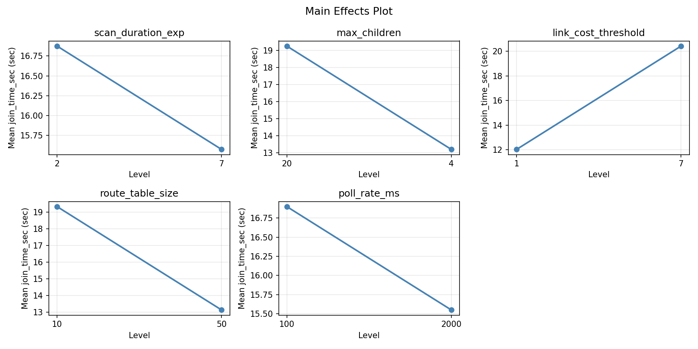
Normal Probability Plot of Effects

Half-Normal Plot of Effects

Model Diagnostics
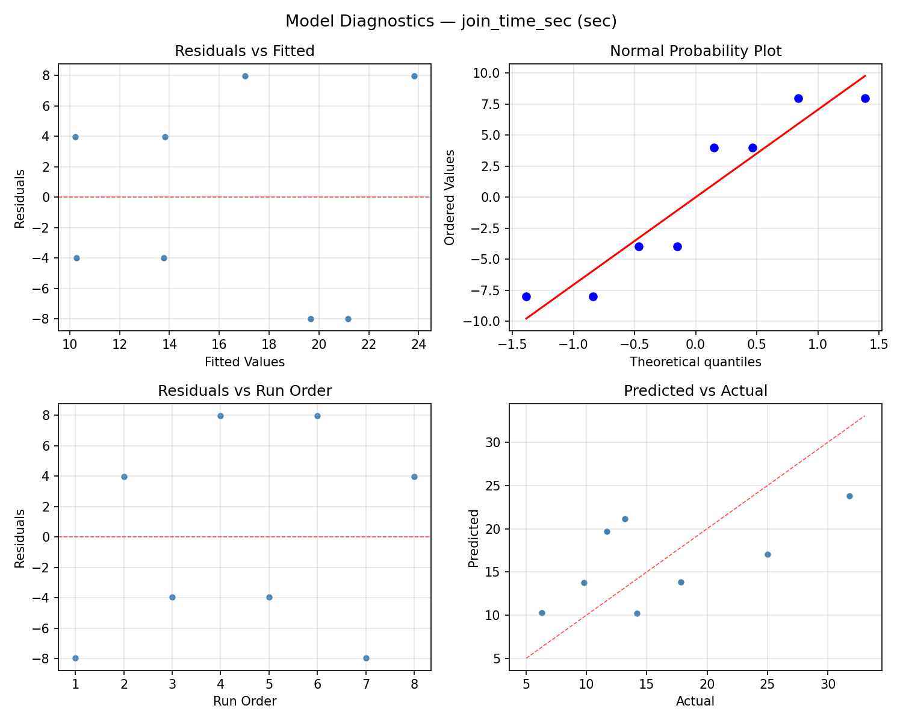
Response: network_stability_pct
Top factors: max_children (41.2%), scan_duration_exp (17.7%), route_table_size (17.7%).
ANOVA
| Source | DF | SS | MS | F | p-value |
|---|
| Source | DF | SS | MS | F | p-value |
| scan_duration_exp | 1 | 23.4612 | 23.4612 | 0.667 | 0.4513 |
| max_children | 1 | 127.2012 | 127.2012 | 3.615 | 0.1157 |
| link_cost_threshold | 1 | 10.8113 | 10.8113 | 0.307 | 0.6033 |
| route_table_size | 1 | 23.4612 | 23.4612 | 0.667 | 0.4513 |
| poll_rate_ms | 1 | 9.9012 | 9.9012 | 0.281 | 0.6185 |
| scan_duration_exp*max_children | 1 | 23.4613 | 23.4613 | 0.667 | 0.4513 |
| scan_duration_exp*link_cost_threshold | 1 | 9.9013 | 9.9013 | 0.281 | 0.6185 |
| scan_duration_exp*route_table_size | 1 | 127.2013 | 127.2013 | 3.615 | 0.1157 |
| scan_duration_exp*poll_rate_ms | 1 | 10.8113 | 10.8113 | 0.307 | 0.6033 |
| max_children*link_cost_threshold | 1 | 66.7013 | 66.7013 | 1.895 | 0.2270 |
| max_children*route_table_size | 1 | 23.4613 | 23.4613 | 0.667 | 0.4513 |
| max_children*poll_rate_ms | 1 | 221.5513 | 221.5513 | 6.296 | 0.0539 |
| link_cost_threshold*route_table_size | 1 | 221.5513 | 221.5513 | 6.296 | 0.0539 |
| link_cost_threshold*poll_rate_ms | 1 | 23.4613 | 23.4613 | 0.667 | 0.4513 |
| route_table_size*poll_rate_ms | 1 | 66.7013 | 66.7013 | 1.895 | 0.2270 |
| Error | (Lenth | PSE) | 5 | 175.9594 | 35.1919 |
| Total | 7 | 483.0888 | 69.0127 | | |
Pareto Chart
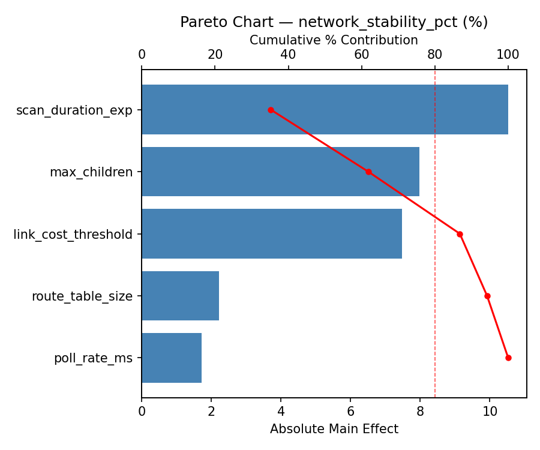
Main Effects Plot
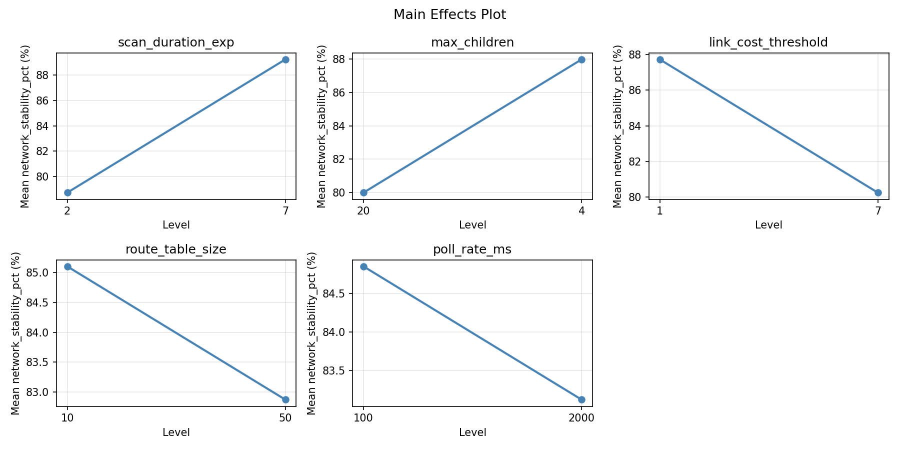
Normal Probability Plot of Effects

Half-Normal Plot of Effects
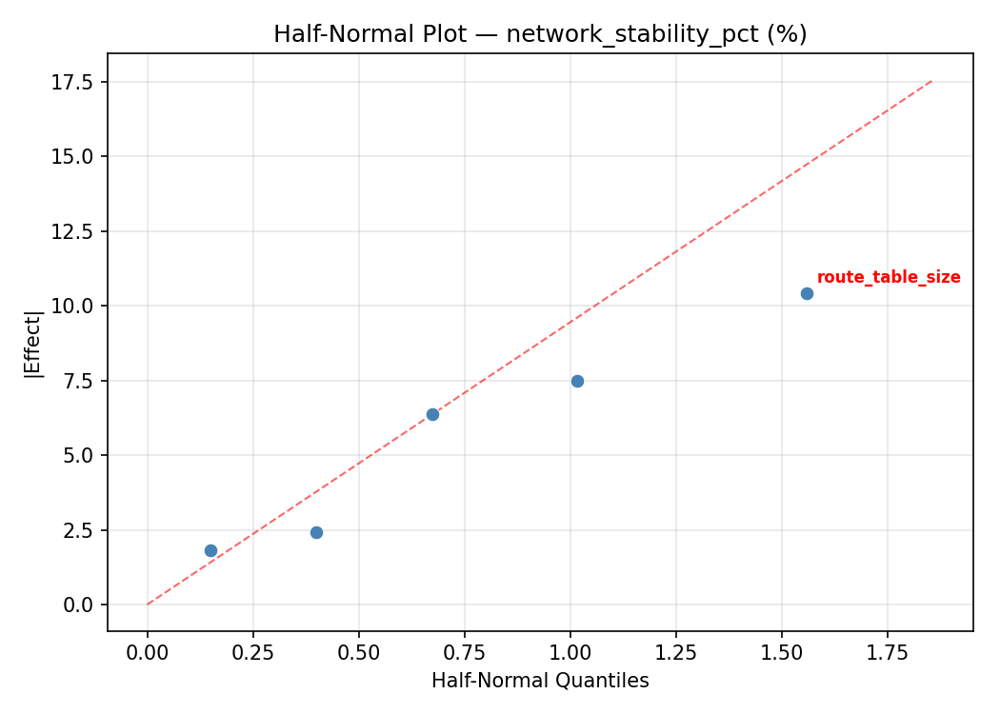
Model Diagnostics

Response Surface Plots
3D surfaces fitted with quadratic RSM. Red dots are observed data points.
join time sec link cost threshold vs poll rate ms

join time sec link cost threshold vs route table size

join time sec max children vs link cost threshold
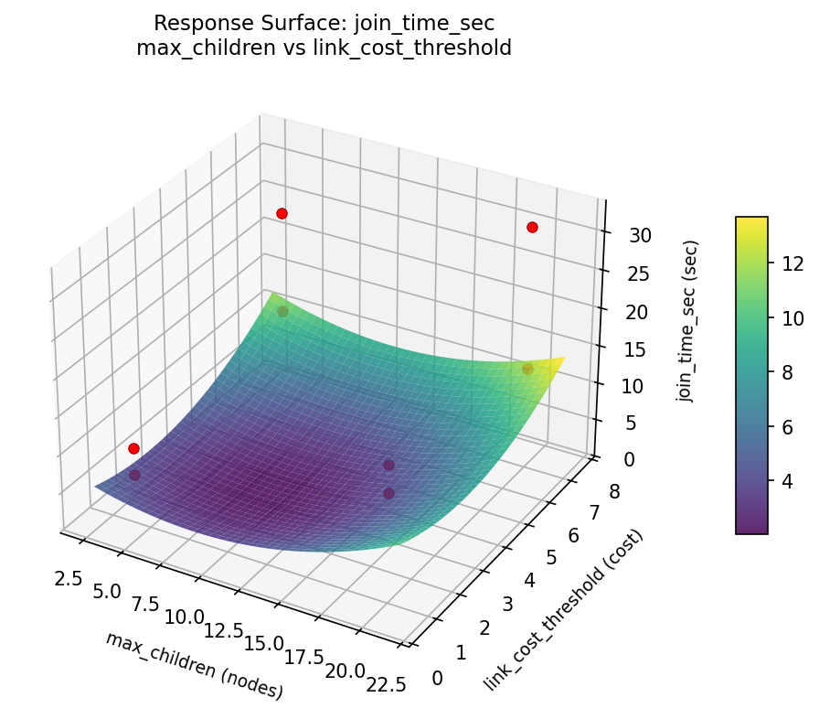
join time sec max children vs poll rate ms

join time sec max children vs route table size

join time sec route table size vs poll rate ms
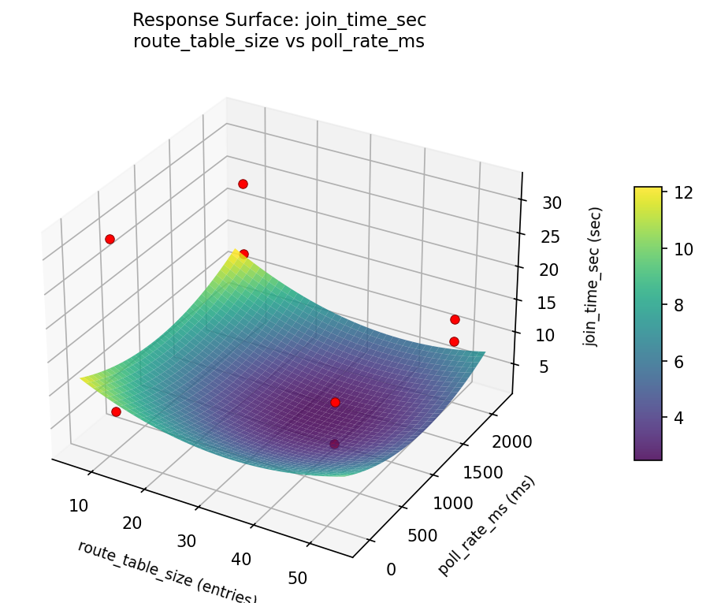
join time sec scan duration exp vs link cost threshold
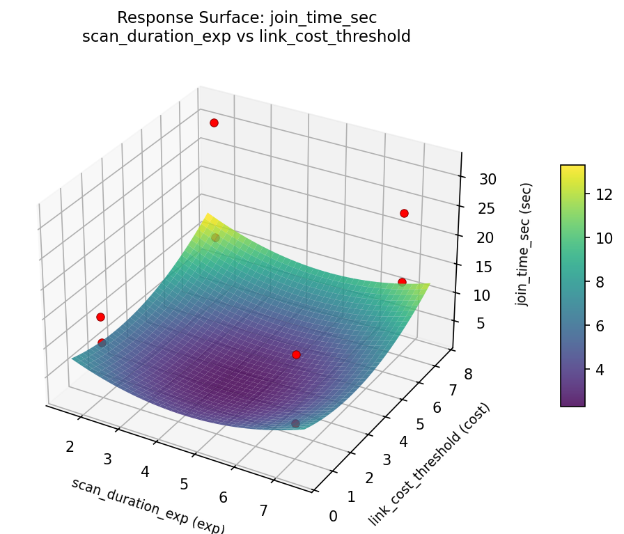
join time sec scan duration exp vs max children
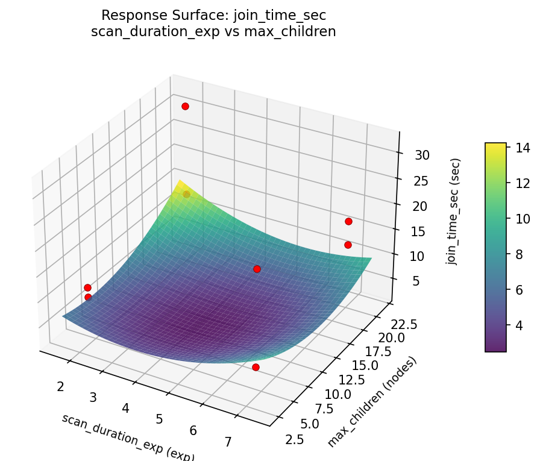
join time sec scan duration exp vs poll rate ms
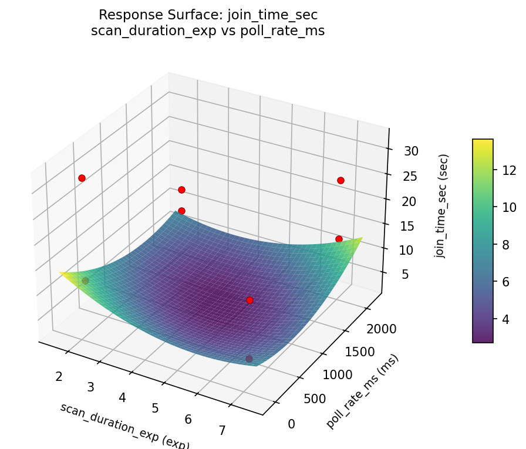
join time sec scan duration exp vs route table size

network stability pct link cost threshold vs poll rate ms
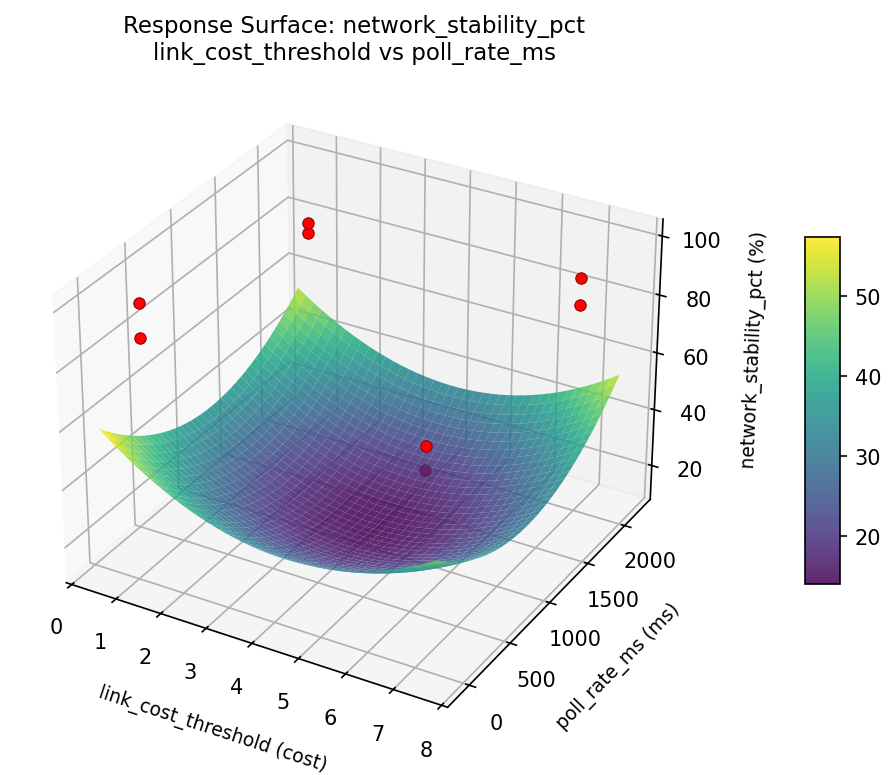
network stability pct link cost threshold vs route table size

network stability pct max children vs link cost threshold
network stability pct max children vs poll rate ms
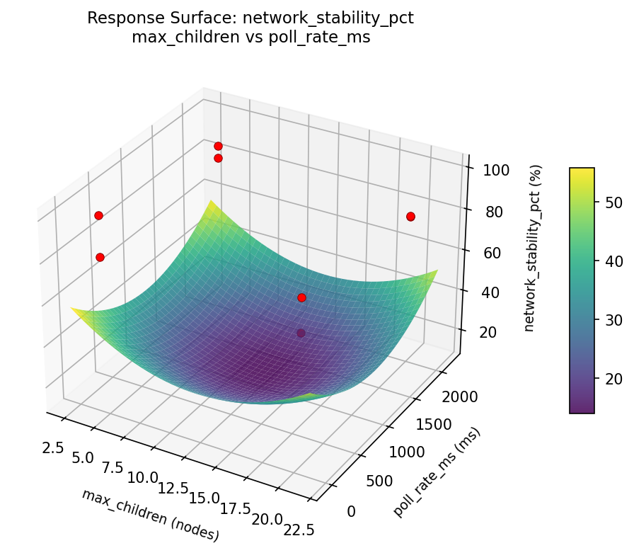
network stability pct max children vs route table size
network stability pct route table size vs poll rate ms
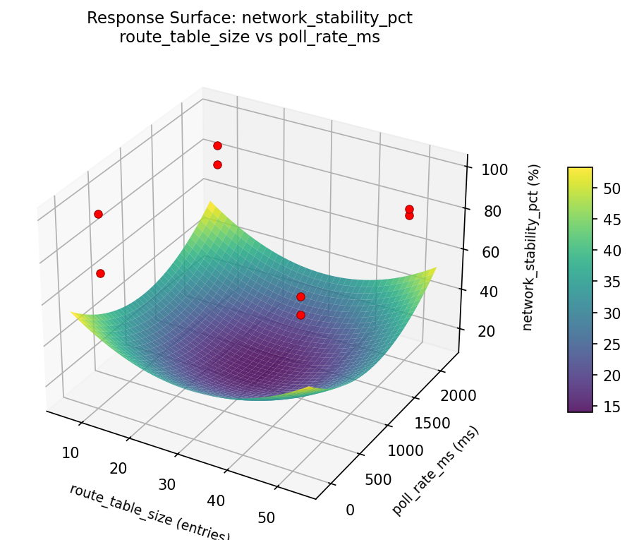
network stability pct scan duration exp vs link cost threshold

network stability pct scan duration exp vs max children

network stability pct scan duration exp vs poll rate ms
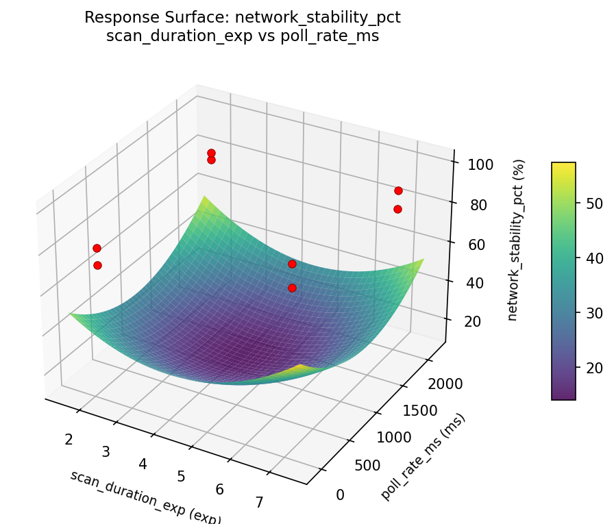
network stability pct scan duration exp vs route table size
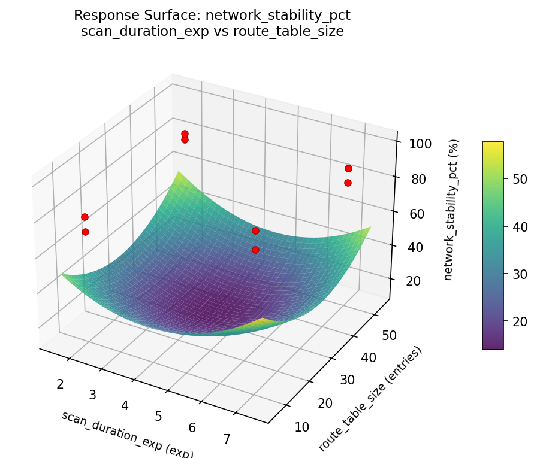
Multi-Objective Optimization
When responses compete, Derringer–Suich desirability finds the best compromise.
Each response is scaled to a 0–1 desirability, then combined via a weighted geometric mean.
Overall Desirability
D = 0.9545
Per-Response Desirability
| Response | Weight | Desirability | Predicted | Dir |
|---|
join_time_sec |
1.0 |
|
6.30 0.9545 6.30 sec |
↓ |
network_stability_pct |
1.5 |
|
99.50 0.9545 99.50 % |
↑ |
Recommended Settings
| Factor | Value |
|---|
scan_duration_exp | 2 exp |
max_children | 20 nodes |
link_cost_threshold | 1 cost |
route_table_size | 10 entries |
poll_rate_ms | 2000 ms |
Source: from observed run #3
Trade-off Summary
Sacrifice = how much worse than single-objective best.
| Response | Predicted | Best Observed | Sacrifice |
|---|
network_stability_pct | 99.50 | 99.50 | +0.00 |
Top 3 Runs by Desirability
| Run | D | Factor Settings |
|---|
| #2 | 0.5677 | scan_duration_exp=2, max_children=4, link_cost_threshold=7, route_table_size=50, poll_rate_ms=100 |
| #5 | 0.5537 | scan_duration_exp=2, max_children=4, link_cost_threshold=1, route_table_size=50, poll_rate_ms=2000 |
Model Quality
| Response | R² | Type |
|---|
network_stability_pct | 0.5363 | linear |
Full Multi-Objective Output
============================================================
MULTI-OBJECTIVE OPTIMIZATION
Method: Derringer-Suich Desirability Function
============================================================
Overall desirability: D = 0.9545
Response Weight Desirability Predicted Direction
---------------------------------------------------------------------
join_time_sec 1.0 0.9545 6.30 sec ↓
network_stability_pct 1.5 0.9545 99.50 % ↑
Recommended settings:
scan_duration_exp = 2 exp
max_children = 20 nodes
link_cost_threshold = 1 cost
route_table_size = 10 entries
poll_rate_ms = 2000 ms
(from observed run #3)
Trade-off summary:
join_time_sec: 6.30 (best observed: 6.30, sacrifice: +0.00)
network_stability_pct: 99.50 (best observed: 99.50, sacrifice: +0.00)
Model quality:
join_time_sec: R² = 0.9652 (linear)
network_stability_pct: R² = 0.5363 (linear)
Top 3 observed runs by overall desirability:
1. Run #3 (D=0.9545): scan_duration_exp=2, max_children=20, link_cost_threshold=1, route_table_size=10, poll_rate_ms=2000
2. Run #2 (D=0.5677): scan_duration_exp=2, max_children=4, link_cost_threshold=7, route_table_size=50, poll_rate_ms=100
3. Run #5 (D=0.5537): scan_duration_exp=2, max_children=4, link_cost_threshold=1, route_table_size=50, poll_rate_ms=2000
Full Analysis Output
=== Main Effects: join_time_sec ===
Factor Effect Std Error % Contribution
--------------------------------------------------------------
route_table_size -10.7000 2.9748 44.0%
poll_rate_ms 6.2000 2.9748 25.5%
max_children -6.0500 2.9748 24.9%
link_cost_threshold 0.9500 2.9748 3.9%
scan_duration_exp -0.4000 2.9748 1.6%
=== ANOVA Table: join_time_sec ===
Source DF SS MS F p-value
-----------------------------------------------------------------------------
scan_duration_exp 1 0.3200 0.3200 0.003 0.9590
max_children 1 73.2050 73.2050 0.667 0.4513
link_cost_threshold 1 1.8050 1.8050 0.016 0.9030
route_table_size 1 228.9800 228.9800 2.085 0.2083
poll_rate_ms 1 76.8800 76.8800 0.700 0.4409
scan_duration_exp*max_children 1 228.9800 228.9800 2.085 0.2083
scan_duration_exp*link_cost_threshold 1 76.8800 76.8800 0.700 0.4409
scan_duration_exp*route_table_size 1 73.2050 73.2050 0.667 0.4513
scan_duration_exp*poll_rate_ms 1 1.8050 1.8050 0.016 0.9030
max_children*link_cost_threshold 1 111.0050 111.0050 1.011 0.3608
max_children*route_table_size 1 0.3200 0.3200 0.003 0.9590
max_children*poll_rate_ms 1 3.3800 3.3800 0.031 0.8676
link_cost_threshold*route_table_size 1 3.3800 3.3800 0.031 0.8676
link_cost_threshold*poll_rate_ms 1 0.3200 0.3200 0.003 0.9590
route_table_size*poll_rate_ms 1 111.0050 111.0050 1.011 0.3608
Error (Lenth PSE) 5 549.0375 109.8075
Total 7 495.5750 70.7964
Note: Error estimated using Lenth's pseudo-standard-error (unreplicated design)
=== Interaction Effects: join_time_sec ===
Factor A Factor B Interaction % Contribution
------------------------------------------------------------------------
scan_duration_exp max_children 10.7000 25.4%
max_children link_cost_threshold 7.4500 17.7%
route_table_size poll_rate_ms -7.4500 17.7%
scan_duration_exp link_cost_threshold 6.2000 14.7%
scan_duration_exp route_table_size 6.0500 14.3%
max_children poll_rate_ms -1.3000 3.1%
link_cost_threshold route_table_size 1.3000 3.1%
scan_duration_exp poll_rate_ms 0.9500 2.3%
max_children route_table_size 0.4000 0.9%
link_cost_threshold poll_rate_ms -0.4000 0.9%
=== Summary Statistics: join_time_sec ===
scan_duration_exp:
Level N Mean Std Min Max
------------------------------------------------------------
2 4 16.4250 11.3238 6.3000 31.8000
7 4 16.0250 6.0709 11.7000 25.0000
max_children:
Level N Mean Std Min Max
------------------------------------------------------------
20 4 19.2500 8.5967 13.2000 31.8000
4 4 13.2000 8.1784 6.3000 25.0000
link_cost_threshold:
Level N Mean Std Min Max
------------------------------------------------------------
1 4 15.7500 11.1027 6.3000 31.8000
7 4 16.7000 6.4281 9.8000 25.0000
route_table_size:
Level N Mean Std Min Max
------------------------------------------------------------
10 4 21.5750 8.7187 11.7000 31.8000
50 4 10.8750 3.5846 6.3000 14.2000
poll_rate_ms:
Level N Mean Std Min Max
------------------------------------------------------------
100 4 13.1250 3.4131 9.8000 17.8000
2000 4 19.3250 11.3100 6.3000 31.8000
=== Main Effects: network_stability_pct ===
Factor Effect Std Error % Contribution
--------------------------------------------------------------
max_children 7.9750 2.9371 41.2%
scan_duration_exp -3.4250 2.9371 17.7%
route_table_size 3.4250 2.9371 17.7%
link_cost_threshold 2.3250 2.9371 12.0%
poll_rate_ms 2.2250 2.9371 11.5%
=== ANOVA Table: network_stability_pct ===
Source DF SS MS F p-value
-----------------------------------------------------------------------------
scan_duration_exp 1 23.4612 23.4612 0.667 0.4513
max_children 1 127.2012 127.2012 3.615 0.1157
link_cost_threshold 1 10.8113 10.8113 0.307 0.6033
route_table_size 1 23.4612 23.4612 0.667 0.4513
poll_rate_ms 1 9.9012 9.9012 0.281 0.6185
scan_duration_exp*max_children 1 23.4613 23.4613 0.667 0.4513
scan_duration_exp*link_cost_threshold 1 9.9013 9.9013 0.281 0.6185
scan_duration_exp*route_table_size 1 127.2013 127.2013 3.615 0.1157
scan_duration_exp*poll_rate_ms 1 10.8113 10.8113 0.307 0.6033
max_children*link_cost_threshold 1 66.7013 66.7013 1.895 0.2270
max_children*route_table_size 1 23.4613 23.4613 0.667 0.4513
max_children*poll_rate_ms 1 221.5513 221.5513 6.296 0.0539
link_cost_threshold*route_table_size 1 221.5513 221.5513 6.296 0.0539
link_cost_threshold*poll_rate_ms 1 23.4613 23.4613 0.667 0.4513
route_table_size*poll_rate_ms 1 66.7013 66.7013 1.895 0.2270
Error (Lenth PSE) 5 175.9594 35.1919
Total 7 483.0888 69.0127
Note: Error estimated using Lenth's pseudo-standard-error (unreplicated design)
=== Interaction Effects: network_stability_pct ===
Factor A Factor B Interaction % Contribution
------------------------------------------------------------------------
max_children poll_rate_ms 10.5250 19.0%
link_cost_threshold route_table_size -10.5250 19.0%
scan_duration_exp route_table_size -7.9750 14.4%
max_children link_cost_threshold -5.7750 10.4%
route_table_size poll_rate_ms 5.7750 10.4%
scan_duration_exp max_children -3.4250 6.2%
max_children route_table_size 3.4250 6.2%
link_cost_threshold poll_rate_ms -3.4250 6.2%
scan_duration_exp poll_rate_ms 2.3250 4.2%
scan_duration_exp link_cost_threshold 2.2250 4.0%
=== Summary Statistics: network_stability_pct ===
scan_duration_exp:
Level N Mean Std Min Max
------------------------------------------------------------
2 4 85.7000 11.4842 71.8000 99.5000
7 4 82.2750 4.6176 79.9000 89.2000
max_children:
Level N Mean Std Min Max
------------------------------------------------------------
20 4 80.0000 6.6958 71.8000 88.2000
4 4 87.9750 8.5905 79.9000 99.5000
link_cost_threshold:
Level N Mean Std Min Max
------------------------------------------------------------
1 4 82.8250 11.7698 71.8000 99.5000
7 4 85.1500 4.3470 79.9000 89.2000
route_table_size:
Level N Mean Std Min Max
------------------------------------------------------------
10 4 82.2750 8.1328 71.8000 89.2000
50 4 85.7000 9.3310 79.9000 99.5000
poll_rate_ms:
Level N Mean Std Min Max
------------------------------------------------------------
100 4 82.8750 3.8767 79.9000 88.2000
2000 4 85.1000 11.9457 71.8000 99.5000
Optimization Recommendations
=== Optimization: join_time_sec ===
Direction: minimize
Best observed run: #3
scan_duration_exp = 2
max_children = 4
link_cost_threshold = 1
route_table_size = 50
poll_rate_ms = 2000
Value: 6.3
RSM Model (linear, R² = 0.8444, Adj R² = 0.4553):
Coefficients:
intercept +16.2250
scan_duration_exp +4.4500
max_children +0.4750
link_cost_threshold -4.0000
route_table_size -1.5500
poll_rate_ms -3.7250
Predicted optimum (from linear model, at observed points):
scan_duration_exp = 7
max_children = 4
link_cost_threshold = 1
route_table_size = 10
poll_rate_ms = 100
Predicted value: 29.4750
Surface optimum (via L-BFGS-B, linear model):
scan_duration_exp = 2
max_children = 4
link_cost_threshold = 7
route_table_size = 50
poll_rate_ms = 2000
Predicted value: 2.0250
Model quality: Good fit — general trends are captured, some noise remains.
Factor importance:
1. scan_duration_exp (effect: 8.9, contribution: 31.3%)
2. link_cost_threshold (effect: -8.0, contribution: 28.2%)
3. poll_rate_ms (effect: -7.4, contribution: 26.2%)
4. route_table_size (effect: -3.1, contribution: 10.9%)
5. max_children (effect: -0.9, contribution: 3.3%)
=== Optimization: network_stability_pct ===
Direction: maximize
Best observed run: #3
scan_duration_exp = 2
max_children = 4
link_cost_threshold = 1
route_table_size = 50
poll_rate_ms = 2000
Value: 99.5
RSM Model (linear, R² = 0.7345, Adj R² = 0.0708):
Coefficients:
intercept +83.9875
scan_duration_exp -3.7875
max_children +1.1625
link_cost_threshold -3.1875
route_table_size +3.1875
poll_rate_ms +2.8875
Predicted optimum (from linear model, at observed points):
scan_duration_exp = 2
max_children = 4
link_cost_threshold = 1
route_table_size = 50
poll_rate_ms = 2000
Predicted value: 95.8750
Surface optimum (via L-BFGS-B, linear model):
scan_duration_exp = 2
max_children = 20
link_cost_threshold = 1
route_table_size = 50
poll_rate_ms = 2000
Predicted value: 98.2000
Model quality: Good fit — general trends are captured, some noise remains.
Factor importance:
1. scan_duration_exp (effect: -7.6, contribution: 26.6%)
2. link_cost_threshold (effect: -6.4, contribution: 22.4%)
3. route_table_size (effect: 6.4, contribution: 22.4%)
4. poll_rate_ms (effect: 5.8, contribution: 20.3%)
5. max_children (effect: -2.3, contribution: 8.2%)